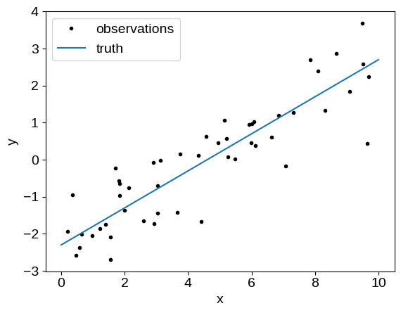
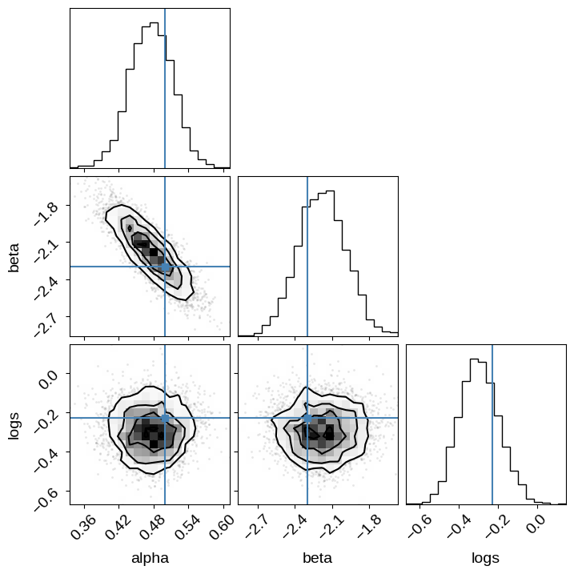
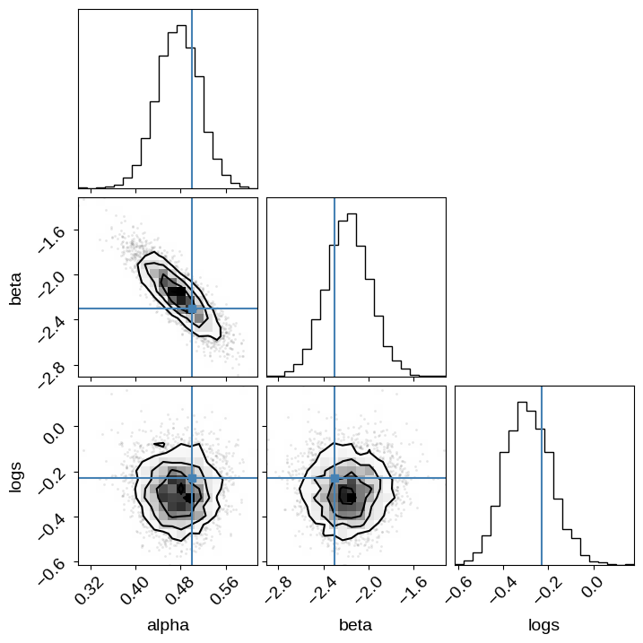

emcee + PyMC3
The source for this post can be found here. Please open an issue or pull request on that repository if you have questions, comments, or suggestions.
In this post, I will demonstrate how you can use emcee to sample models defined using PyMC3. Thomas Wiecki wrote about how to do this this with an earlier version of PyMC, but I needed an update since I wanted to do a comparison and PyMC’s interface has changed a lot since he wrote his post. This isn’t necessarily something that you’ll want to do (and I definitely don’t recommend it in general), but I figured that I would post it here for posterity.
For simplicity, let’s use the simulated data from my previous blog post:
import numpy as np
import matplotlib.pyplot as plt
np.random.seed(42)
true_params = np.array([0.5, -2.3, -0.23])
N = 50
t = np.linspace(0, 10, 2)
x = np.random.uniform(0, 10, 50)
y = x * true_params[0] + true_params[1]
y_obs = y + np.exp(true_params[-1]) * np.random.randn(N)
plt.plot(x, y_obs, ".k", label="observations")
plt.plot(t, true_params[0] * t + true_params[1], label="truth")
plt.xlabel("x")
plt.ylabel("y")
plt.legend(fontsize=14);

Then, we can code up the model in PyMC3 following Jake VanderPlas' notation, and sample it using PyMC3’s NUTS[sic] sampler:
import pymc3 as pm
import theano.tensor as tt
with pm.Model() as model:
logs = pm.Normal("logs", mu=0.0, sigma=3.0)
alphaperp = pm.Normal("alphaperp", mu=0.0, sigma=3.0)
theta = pm.Uniform("theta", -np.pi, np.pi, testval=0.0)
# alpha_perp = alpha * cos(theta)
alpha = pm.Deterministic("alpha", alphaperp / tt.cos(theta))
# beta = tan(theta)
beta = pm.Deterministic("beta", tt.tan(theta))
# The observation model
mu = alpha * x + beta
pm.Normal("obs", mu=mu, sd=tt.exp(logs), observed=y_obs)
trace = pm.sample(
draws=2000,
tune=5000,
chains=2,
cores=1,
target_accept=0.9,
return_inferencedata=True,
init="adapt_full",
)
WARNING (theano.tensor.blas): Using NumPy C-API based implementation for BLAS functions.
Auto-assigning NUTS sampler...
Initializing NUTS using adapt_full...
/home/runner/work/dfm.io/dfm.io/posts/emcee-pymc3/.venv/lib/python3.9/site-packages/pymc3/step_methods/hmc/quadpotential.py:510: UserWarning: QuadPotentialFullAdapt is an experimental feature
warnings.warn("QuadPotentialFullAdapt is an experimental feature")
Sequential sampling (2 chains in 1 job)
NUTS: [theta, alphaperp, logs]
Sampling 2 chains for 5_000 tune and 2_000 draw iterations (10_000 + 4_000 draws total) took 12 seconds.
And we can take a look at the corner plot:
import corner
names = ["alpha", "beta", "logs"]
corner.corner(trace, var_names=names, truths=dict(zip(names, true_params)));

Sampling the PyMC3 model using emcee#
To sample this using emcee, we’ll need to do a little bit of bookkeeping. I’ve coded this up using version 3 of emcee that is currently available as the master branch on GitHub or as a pre-release on PyPI, so you’ll need to install that version to run this.
To sample from this model, we need to expose the Theano method for evaluating the log probability to Python. There is a version of this built into PyMC3, but I also want to return the values of all the deterministic variables using the “blobs” feature in emcee so the function is slightly more complicated.
import theano
with model:
f = theano.function(
model.vars, [model.logpt] + list(model.vars) + list(model.deterministics)
)
def log_prob_func(params):
dct = model.bijection.rmap(params)
args = (dct[k.name] for k in model.vars)
results = f(*args)
return tuple(results)
And now we can run the sampler:
import emcee
with model:
# First we work out the shapes of all of the deterministic variables
res = pm.find_MAP()
vec = model.bijection.map(res)
initial_blobs = log_prob_func(vec)[1:]
dtype = [
(var.name, float, np.shape(b))
for var, b in zip(list(model.vars) + list(model.deterministics), initial_blobs)
]
# Then sample as usual
coords = vec + 1e-5 * np.random.randn(25, len(vec))
nwalkers, ndim = coords.shape
sampler = emcee.EnsembleSampler(nwalkers, ndim, log_prob_func, blobs_dtype=dtype)
sampler.run_mcmc(coords, 5000, progress=True)
You must install the tqdm library to use progress indicators with emcee
And we can use this to make the same corner plot as above:
import pandas as pd
df = pd.DataFrame.from_records(sampler.get_blobs(flat=True, discard=100, thin=30))
corner.corner(df[["alpha", "beta", "logs"]], truths=true_params);
Pandas support in corner is deprecated; use ArviZ directly

The last thing that we might want to look at is the integrated autocorrelation time for each method. First, as expected, the autocorrelation for PyMC3 is very short (about 1 step):
[
float(emcee.autocorr.integrated_time(np.array(trace.posterior[var].values).T))
for var in ["logs", "alphaperp", "theta"]
]
[1.334548254067617, 1.3190172164161442, 1.19597488084929]
And, the autocorrelation for emcee is about 40 steps:
sampler.get_autocorr_time(discard=100)
array([35.01199991, 34.21983345, 37.38879886])
If you want to compare these results in detail, you’ll want to make sure that you take into account the fact that each step of NUTS is significantly more expensive than one step with emcee, but that’s way beyond the scope of this post…
11/22/18: This post has been updated with suggestions from Thomas Wiecki. The find_MAP call has been removed from the PyMC sampling, and model.bijection is now used to map between arrays and dicts of parameters.